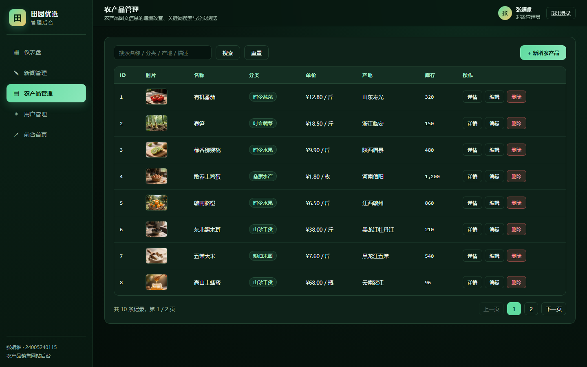

管理后台 · 03
农产品管理
后台农产品管理页面，支持搜索、分页浏览，以及新增、编辑与删除农产品。
admin/produce.html

页面说明
列表展示农产品编号、名称、分类、产地、价格与上架状态，图片使用缩略图展示，点击可查看原图。
新增与编辑共用同一弹窗表单，提交前做必填校验；删除操作需要二次确认，成功后刷新当前页数据。
功能要点
- 按名称与产地搜索
- 分页浏览与总条数展示
- 新增与编辑农产品弹窗
- 图片地址预览
- 删除二次确认
接口说明
| 方法 | 接口路径 | 说明 |
|---|---|---|
| GET | /api/admin/produce |
分页查询农产品列表 |
| POST | /api/admin/produce |
新增农产品 |
| GET | /api/admin/produce/:id |
查询农产品详情 |
| PUT | /api/admin/produce/:id |
修改农产品 |
| DELETE | /api/admin/produce/:id |
删除农产品 |
相关文件
admin/produce.html
admin/js/zhang_admin_produce.js
admin/js/zhang_admin_api.js